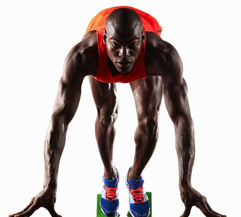

Mapa de investigação do negócio
Um bom gestor conhece o negócio onde está inserido, os objetivos estratégicos, os resultados e a atuação da empresa no mercado, pois só assim ele é capaz de fazer uma boa gestão da sua equipe e alcançar os resultados esperados.

Se pensarmos nos atletas, notamos que eles também precisam de uma amplitude de conhecimentos para vencer as provas. A compreensão da anatomia corporal, alimentação, fisiologia, análise dos competidores, últimos recordes etc, faz parte da sua atuação; e isso exige pesquisa, estudo, levantamento e análise de informações.
Para adquirir o conhecimento e as informações necessárias para um bom desempenho é necessário se preparar.
Preparar-se é um ato de inteligência, mas, acima de tudo, é um ato de respeito consigo e com os outros. Significa que antes de fazermos algo, dedicamos tempo de qualidade para alcançarmos nosso objetivo. O resultado que alcançamos, sem dúvida, é melhor do que quando não nos preparamos.